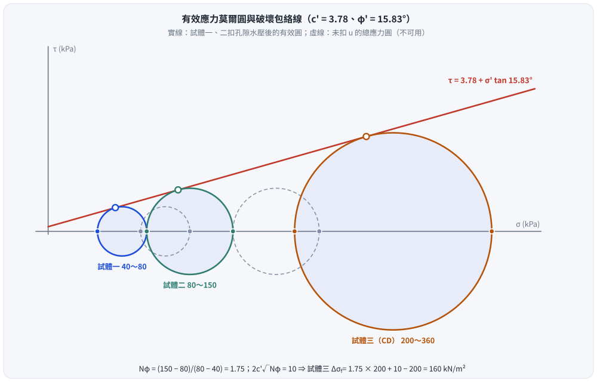

📄 題目正本：考卷原文・附圖・判讀清單（已確認）
SM-2025-2 題目正本
本檔只記錄考卷上寫了什麼、圖上畫了什麼，不含任何解法。解析見同資料夾
SM-2025-2.md。
判讀清單已確認（凍結）；本檔原則上不再修改（改動須回考卷原圖並記 log）。
| 項目 | 內容 |
|---|---|
| 考卷 | raw/exams/SM-2025_土壤力學與基礎設計.pdf 第 1 頁（頁次 2－1），第二題 |
| 考年 | 民國 114 年（2025） |
| 配分 | 25 分 |
| 附圖 | 無（題內有試驗結果表，照錄於 §1） |
| 判讀狀態 | 已確認（2026-11-15 關卡一：使用者授權依建議判讀確認；轉錄 2026-11-15；PyMuPDF 110 dpi 全頁目視，PDF 文字層核對表格與公式；盲讀後才比對既有解析） |
1. 考卷原文（逐字）
二、針對一黏土進行三軸等向壓密不排水試驗，試驗結果如下：
壓密時的圍壓 $\sigma_3$ 破壞時的軸差應力 $\Delta\sigma=\sigma_1-\sigma_3$ 破壞時的孔隙水壓 $u$ 試體一 75 kN/m² 40 kN/m² 35 kN/m² 試體二 150 kN/m² 70 kN/m² 70 kN/m² 另有試體三（同一黏土）做三軸等向壓密排水試驗，壓密時的圍壓為等向 200 kN/m²，請計算破壞時的 $\Delta\sigma$。（25 分）
$$\sigma'_1=\sigma'_3\tan^2\left(45°+\frac{\phi'}{2}\right)+2c'\tan\left(45°+\frac{\phi'}{2}\right)$$
2. 考卷給的公式、附表與參數
- 試驗結果表（照錄於 §1）：試體一 $\sigma_3$ = 75、$\Delta\sigma_f$ = 40、$u_f$ = 35；試體二 $\sigma_3$ = 150、$\Delta\sigma_f$ = 70、$u_f$ = 70（kN/m²）。
- 試體三：等向壓密排水（CD），圍壓 200 kN/m²。
- 考卷給破壞準則：$\sigma'_1=\sigma'_3\tan^2(45°+\phi'/2)+2c'\tan(45°+\phi'/2)$。
- 沒有給：$c'$、$\phi'$ 的數值（須由試體一、二求得）、黏土應力歷史、背壓。
- 卷首注意事項：㈠可以使用電子計算器。㈡不必抄題，作答時請將試題題號及答案依照順序寫在試卷上，於本試題上作答者，不予計分。㈢本科目除專門名詞或數理公式外，應使用本國文字作答。
3. 附圖
無。
4. 判讀清單
| # | 項目 | 判讀 | 圖上／題文依據 | 把握 |
|---|---|---|---|---|
| 1 | 有效參數來源 | 由試體一、二的破壞有效主應力（$\sigma'_3=\sigma_3-u_f$、$\sigma'_1=\sigma'_3+\Delta\sigma_f$）聯立考卷公式求 $c'$、$\phi'$；考卷沒說 $c'$ = 0，$c'$ 由兩點決定 | 題文、考卷公式含 $2c'$ 項 | 確定（解讀） |
| 2 | 孔隙水壓 | 表中 $u$ 為破壞時（相對背壓的）孔隙水壓 | 表頭 | 確定（解讀） |
| 3 | 試體三 | 同一黏土、等向壓密 200 kN/m² 後排水剪切 → 破壞時孔隙水壓為零、$\sigma'_3$ = 200 | 題文「排水」 | 確定（解讀） |
| 4 | 所求 | 試體三破壞時的軸差應力 $\Delta\sigma$ | 題文 | 確定 |
| 5 | 考卷沒有給 | 應力歷史、背壓 | 全題 | 確定 |
轉錄：2026-11-15（SM-U1-5 題目正本推廣・批 1）
確認：2026-11-15 使用者授權依建議判讀確認（SM-U1-5 題目正本推廣・批 1，關卡一；使用者指示「要我確認的請依你建議」）
考題編號：SM-2025-2
主分類： SM-U1-5 土壤強度特性與變形性
副分類： 無
分析法： 有效應力法
標籤： 三軸試驗 CU試驗 CD試驗 Mohr-Coulomb破壞準則 有效強度參數 孔隙水壓
1. 題目（考卷原文見題目正本）
考卷原文、公式／附表、附圖與判讀清單（已確認）見
SM-2025-2-problem.md。本節只列解題時最容易讀錯的地方與本解使用的記號；題意以題目正本為準。
常見誤讀
| 項目 | 正確判讀 | 常見誤讀 |
|---|---|---|
| 有效參數 | 由試體一、二的破壞有效主應力聯立考卷公式求 $c'$、$\phi'$；考卷沒說 $c'$ = 0（題目正本 #1） | 直接令 $c'$ = 0 只用一個試體 |
| 有效應力 | $\sigma'_3=\sigma_3-u_f$、$\sigma'_1=\sigma'_3+\Delta\sigma_f$（#1、#2） | 用總應力代入考卷公式 |
| 試體三 | 等向壓密排水，破壞時孔隙水壓為零、$\sigma'_3$ = 200（#3） | 沿用不排水試體的孔隙水壓 |
本解記號： $\sigma'_1$、$\sigma'_3$ 破壞有效主應力；$c'$、$\phi'$ 有效強度參數；$N_\phi=\tan^2(45°+\phi'/2)$；$\Delta\sigma$ 破壞軸差應力。
2. 考題核心精神與出題者意圖 (Core Concepts & Examiner's Intent)
本題核心精神在測驗考生對於「有效應力原理」與「Mohr-Coulomb 破壞準則」的理解。出題者給定不排水試驗（CU test）的總應力與孔隙水壓，要求考生先轉換為有效應力（$\sigma_1'$ 與 $\sigma_3'$），以此求得真實的有效強度參數 $c'$ 與 $\phi'$。再利用這組真實的材料強度參數，去預測排水試驗（CD test）在不同排水條件與圍壓下的破壞行為。
3. 解題戰略地圖與陷阱分析 (Strategic Roadmap & Trap Analysis)
戰略地圖：
- Step 1: 將試體一與試體二的總應力與孔隙水壓數據，轉換為破壞時的有效主應力（$\sigma_1'$ 與 $\sigma_3'$）。
- Step 2: 將兩組有效主應力代入題目給定的破壞準則公式：$\sigma_1' = \sigma_3' N_\phi + 2 c' \sqrt{N_\phi}$，其中令 $N_\phi = \tan^2(45^\circ + \frac{\phi'}{2})$。
- Step 3: 解聯立方程式，求出 $N_\phi$ 以及常數項 $2 c' \sqrt{N_\phi}$。
- Step 4: 針對試體三（CD 試驗），已知孔隙水壓 $u=0$，將給定圍壓視為有效圍壓，代入已知的強度參數組合，求出破壞時的有效大主應力 $\sigma_1'$，最終扣除 $\sigma_3'$ 求得軸差應力 $\Delta\sigma$。
陷阱分析：
- 未轉換有效應力： 直接使用 CU 試驗的總圍壓 $\sigma_3$ 與總軸向應力 $\sigma_1$ 去推算強度參數，會得到錯誤的總應力參數 ($c_{cu}, \phi_{cu}$)，無法套用於不同排水條件的 CD 試驗。
- CD 試驗的孔隙水壓判斷： 排水試驗過程中孔隙水壓完全消散（$u=0$），若觀念不清可能會誤用前兩組的孔隙水壓比例。
- 計算繁瑣與進位誤差： 直接解 $\phi'$ 與 $c'$ 會有三角函數運算與小數進位問題。推薦使用 $N_\phi$ 直接代數替換，不但計算極度乾淨（$N_\phi = 1.75$），也避免無謂的進位誤差。
3.5 變數層次分析 (Variable Hierarchy Analysis)
最終目標
從 CU 試驗反算有效強度參數，並預測 CD 試驗在圍壓 200 kN/m² 下破壞時的軸差應力 Δσ。
本題關鍵公式（依計算順序）
$$ \sigma_1' = \sigma_3 + \Delta\sigma - u $$
$$ \sigma_3' = \sigma_3 - u $$
$$ \sigma_1' = \boxed{\sigma_3'} N_\phi + 2c'\sqrt{N_\phi} $$
$$ \Delta\sigma_{CD} = \boxed{\sigma_{1, CD}'} - \sigma_{3, CD}' $$
L1：題目直接給定
| 符號 | 數值 | 說明 |
|---|---|---|
| $\sigma_{3,1}$ | 75 kN/m² | 試體一：總圍壓 |
| $\Delta\sigma_1$ | 40 kN/m² | 試體一：軸差應力 |
| $u_1$ | 35 kN/m² | 試體一：破壞時孔隙水壓 |
| $\sigma_{3,2}$ | 150 kN/m² | 試體二：總圍壓 |
| $\Delta\sigma_2$ | 70 kN/m² | 試體二：軸差應力 |
| $u_2$ | 70 kN/m² | 試體二：破壞時孔隙水壓 |
| $\sigma_{3,3}$ | 200 kN/m² | 試體三(CD)：等向壓密圍壓 |
L2：需知識點推導
| 符號 | 公式／來源 | 卡關? |
|---|---|---|
| 第一階段：計算 CU 試驗有效應力 | ||
| $\sigma_{3,1}'$ | $\sigma_{3,1} - u_1$ | |
| $\sigma_{1,1}'$ | $(\sigma_{3,1} + \Delta\sigma_1) - u_1$ | |
| $\sigma_{3,2}'$ | $\sigma_{3,2} - u_2$ | |
| $\sigma_{1,2}'$ | $(\sigma_{3,2} + \Delta\sigma_2) - u_2$ | |
| 第二階段：推導有效強度參數組合 | ||
| $N_\phi$ | 聯立方程式相減：$\frac{\sigma_{1,2}' - \sigma_{1,1}'}{\sigma_{3,2}' - \sigma_{3,1}'}$ | |
| $2c'\sqrt{N_\phi}$ | 代回方程式一：$\sigma_{1,1}' - \sigma_{3,1}' N_\phi$ | |
| 第三階段：計算 CD 試驗結果 | ||
| $u_3$ | 0 (因 CD 試驗完全排水) | |
| $\sigma_{3,3}'$ | $\sigma_{3,3} - 0 = \sigma_{3,3}$ | |
| $\sigma_{1,3}'$ | $\sigma_{3,3}' N_\phi + 2c'\sqrt{N_\phi}$ | |
| $\Delta\sigma_3$ | $\sigma_{1,3}' - \sigma_{3,3}'$ |
L3：深層知識
| 知識點 | 說明 | 卡關? |
|---|---|---|
| 有效應力原理 | 決定土壤強度的唯一條件是「有效應力」$\sigma' = \sigma - u$ | |
| CD 試驗特徵 | 壓密排水試驗在加載過程中允許排水，超額孔隙水壓 $u = 0$ | |
| $\Delta\sigma$ 與 $\sigma_1$ 之關係 | 軸差應力即為主應力差：$\Delta\sigma = \sigma_1 - \sigma_3 = \sigma_1' - \sigma_3'$ |
4. 步驟化詳細計算過程 (Step-by-Step Detailed Calculation)
Step 1：整理試體一與試體二的有效應力
試體一：
$$ \text{總圍壓 } \sigma_3 = 75 \text{ kN/m}^2 $$
$$ \text{總大主應力 } \sigma_1 = \sigma_3 + \Delta\sigma = 75 + 40 = 115 \text{ kN/m}^2 $$
有效主應力：
$$ \sigma_{3,1}' = \sigma_3 - u = 75 - 35 = 40 \text{ kN/m}^2 $$
$$ \sigma_{1,1}' = \sigma_1 - u = 115 - 35 = 80 \text{ kN/m}^2 $$
試體二：
$$ \text{總圍壓 } \sigma_3 = 150 \text{ kN/m}^2 $$
$$ \text{總大主應力 } \sigma_1 = \sigma_3 + \Delta\sigma = 150 + 70 = 220 \text{ kN/m}^2 $$
有效主應力：
$$ \sigma_{3,2}' = \sigma_3 - u = 150 - 70 = 80 \text{ kN/m}^2 $$
$$ \sigma_{1,2}' = \sigma_1 - u = 220 - 70 = 150 \text{ kN/m}^2 $$
Step 2：解聯立方程式求參數 $N_\phi$ 與凝聚力組合項
依據給定參考公式：
$$ \sigma_1' = \sigma_3' \tan^2\left(45^\circ + \frac{\phi'}{2}\right) + 2 c' \tan\left(45^\circ + \frac{\phi'}{2}\right) $$
令 $N_\phi = \tan^2(45^\circ + \phi'/2)$，則公式可化簡為：
$$ \sigma_1' = \sigma_3' N_\phi + 2 c' \sqrt{N_\phi} $$
將試體一與試體二的有效應力代入：
$$ (1)\; 80 = 40 N_\phi + 2 c' \sqrt{N_\phi} $$
$$ (2)\; 150 = 80 N_\phi + 2 c' \sqrt{N_\phi} $$
將 (2) 式減去 (1) 式，消去凝聚力項：
$$ 150 - 80 = (80 - 40) N_\phi $$
$$ 70 = 40 N_\phi \implies N_\phi = \frac{70}{40} = 1.75 $$
將 $N_\phi = 1.75$ 代回 (1) 式：
$$ 80 = 40(1.75) + 2 c' \sqrt{N_\phi} $$
$$ 80 = 70 + 2 c' \sqrt{N_\phi} \implies 2 c' \sqrt{N_\phi} = 10 \text{ kN/m}^2 $$
(策略註解：為避免不必要的進位誤差，無須解出真正的 $c'$ 與 $\phi'$，直接保留 $N_\phi=1.75$ 與常數項組合 $10$ 帶入下一步計算即可)
(若需知道實際參數：$\tan(45^\circ + \phi'/2) = \sqrt{1.75} \approx 1.323 \implies \phi' \approx 15.83^\circ$，$c' = 10 / (2 \times 1.323) \approx 3.78 \text{ kN/m}^2$)
Step 3：計算試體三（CD 試驗）之破壞軸差應力
試體三進行 CD (排水) 試驗，於破壞時超額孔隙水壓消散完全，故 $u = 0$。
已知等向壓密圍壓 $\sigma_{3,3} = 200 \text{ kN/m}^2$，故：
$$ \sigma_{3,3}' = \sigma_{3,3} - u = 200 - 0 = 200 \text{ kN/m}^2 $$
利用 Step 2 求得的強度參數組合，計算破壞時的有效大主應力 $\sigma_{1,3}'$：
$$ \sigma_{1,3}' = \sigma_{3,3}' N_\phi + (2 c' \sqrt{N_\phi}) $$
$$ \sigma_{1,3}' = 200(1.75) + 10 = 350 + 10 = 360 \text{ kN/m}^2 $$
最後計算破壞時的軸差應力 $\Delta\sigma$（對應試驗中施加的額外垂直載重）：
$$ \Delta\sigma_3 = \sigma_1 - \sigma_3 = \sigma_{1,3}' - \sigma_{3,3}' = 360 - 200 = 160 \text{ kN/m}^2 $$
$$ \boxed{ \Delta\sigma = 160 \text{ kN/m}^2 } $$

圖 1 兩個有效圓定出一條不過原點的包絡線，試體三的圓沿同一條線長大到 360。攔下「沒扣孔隙水壓就用總應力圓求參數」與「硬設 $c'$ = 0」的錯誤。
5. 關鍵爭議點與進階探討 (Critical Issues & Advanced Discussion)
本題數據經過精心設計，解題時 $N_\phi$ 以及截距項均可得出漂亮的整數或有限小數，這暗示出題者鼓勵考生運用代數技巧（直接帶入保留 $N_\phi$）而非盲目按計算機求角度。在考場上若算出醜陋的小數，反而要檢查是否計算錯誤或忘記扣除孔隙水壓。另外，CD 試驗孔隙水壓為零是大地工程的基本常識，未寫出 $u=0$ 可能會被部分嚴格的閱卷者扣分，建議寫出 $\sigma_3' = \sigma_3 - 0$ 以示觀念清晰。
修正日期：2026-11-15（§1 改為指向題目正本 SM-2025-2-problem.md；§4 Step 3 補解題圖解 figs/SM-2025-2-fig-1-mohr-cphi.svg；非勘誤）